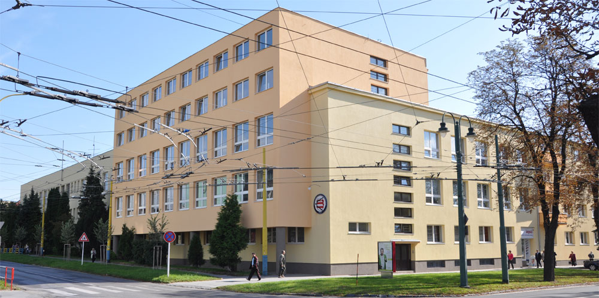

Tobias Lorencovič
Úvod
(current)
Obrázková Galéria
O mne
Kontakt
Volám sa Tobias Lorencovič. Pochádzam z dediny Plaveč blízko Starej Ľubovne. Študujem na Strednej Priemyselnej Škole Elektrotechnikej v Prešove.

Copyright © 2022 Tobias Lorencovič